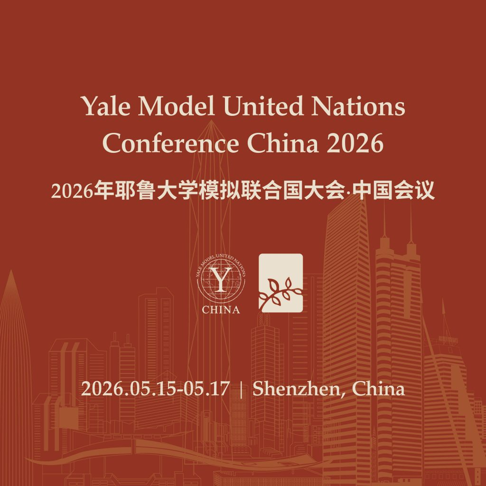
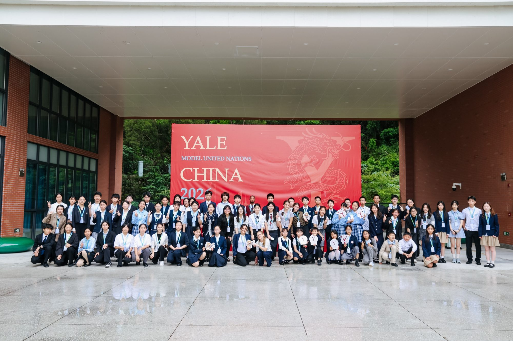
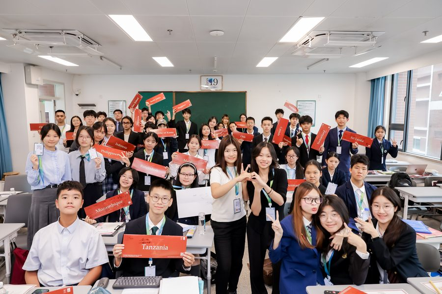
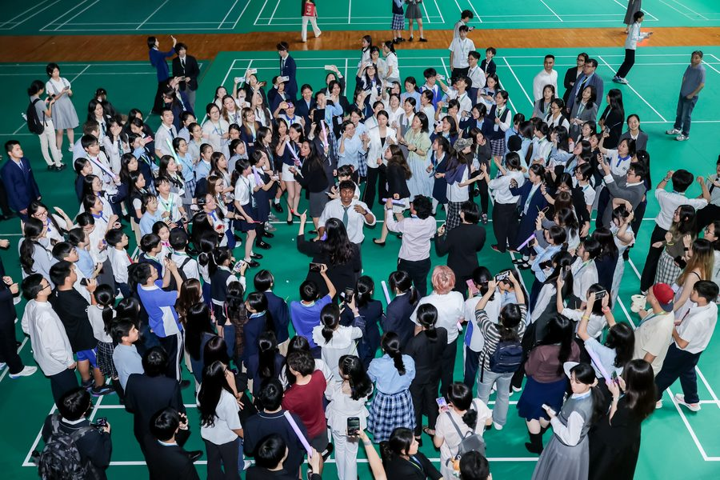
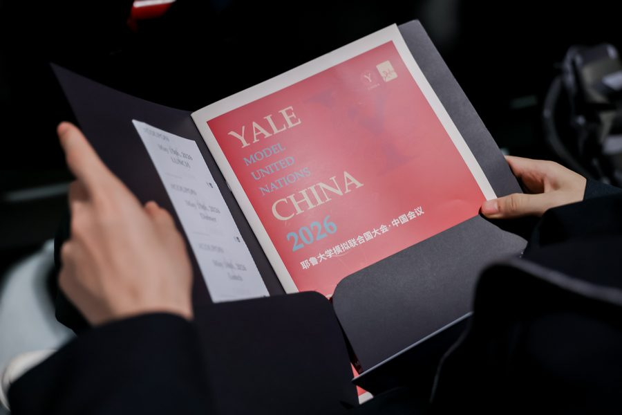
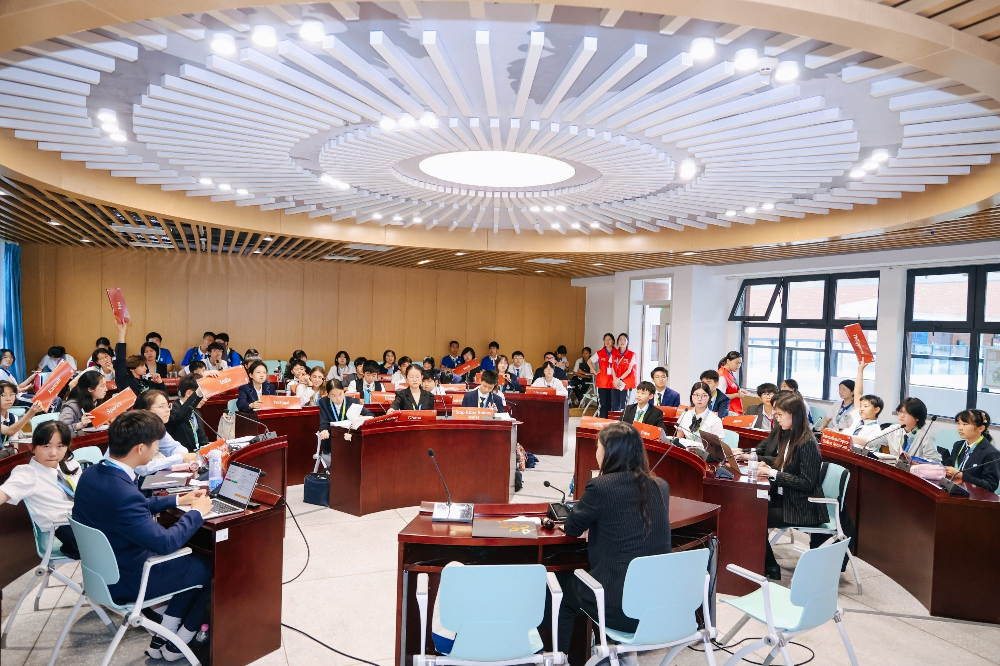

YMUN China 2026
2026 年耶鲁大学模拟联合国大会·中国会议
2026 年 5 月 15 日至 17 日 · 深圳

组委会欢迎信
尊敬的各校领导、指导教师、亲爱的代表们：
我们诚挚邀请您参加 2026 年耶鲁大学模拟联合国大会·中国会议（YMUN China 2026）。本届大会将于 2026 年 5 月 15 日至 17 日在深圳外国语学校（集团）高中部举行。
继 2025 年在深圳成功举办后，大会继续依托粤港澳大湾区的开放创新活力，由耶鲁大学国际关系理事会（YIRA）与蔚蓝国际联合呈献。YMUN 拥有逾半个世纪的学术底蕴，每年于耶鲁大学纽黑文主校区召开的全球会议享誉国际。
2026 年大会以“Shaping Global Voices”（凝聚全球青年之声）为核心议题，汇聚海内外约 500 位优秀高中生代表，围绕多边安全、前沿科技伦理、全球公共卫生、绿色低碳转型等重大现实课题展开纯英文学术磋商。
由 12 位耶鲁大学本科生组成的主席团将秉持专业求实与开放包容的标准，为参会学子提供严谨的学术反馈。会期还将举办“Life at Yale”名校求学与通识教育分享会、主席办公交流时段（Director Office Hours）与专题研究工作坊。
期待与各校师生相聚鹏城五月，以理性思辨与多边合作展现青年一代的格局与担当。
2026 年耶鲁大学模拟联合国大会·中国会议组委会Bryant Pranboonpluk，大会秘书长




委员会与议题设置
- SOCHUM
社会、人道主义与文化委员会
Social, Humanitarian & Cultural Committee
- Advancing Education Opportunities for Displaced Persons流离失所群体教育机会保障
- Addressing Refugees’ Economic Barriers and Limited Opportunities in the Work Force难民就业壁垒消除与劳动力市场准入
- 联合国大会常规委员会40 至 50 人
- WHO
世界卫生组织
World Health Organization
- Risk of A Superbug超级细菌耐药性危机防范
- Access To Advanced Medical Devices先进医疗器械普及与跨国准入
- 联合国大会常规委员会60 至 80 人基础研习委员会
- UNIDO
联合国工业发展组织
United Nations Industrial Development Organization
- Global Energy Supply全球能源安全供应链构建
- Reformation of Global Food Systems全球粮食系统韧性重塑
- 联合国大会常规委员会60 至 80 人基础研习委员会
- UNDP
联合国开发计划署
United Nations Development Programme
- Managing Rapid Urbanization In Developing Regions发展中地区快速城镇化治理
- Sustainable Transportation & Urban Mobility可持续交通网络与城市微出行
- 联合国经社理事会系统40 至 50 人
- CPD
联合国人口与发展委员会
Commission on Population and Development
- Declining Birth Rates / Population Aging生育率走低与人口深度老龄化应对
- Family Planning全球家庭发展计划与生殖健康保障
- 联合国经社理事会系统40 至 50 人小学与初中混合
- ILO
国际劳工组织
International Labour Organization
- Fast Fashion快时尚产业链用工权益保障
- Gig Economy零工经济用工规范与社保覆盖
- 联合国经社理事会系统50 至 80 人含跨国企业代表席位与主权国家席位
- CSTD
联合国科学和技术促进发展委员会
Commission on Science and Technology for Development
- Regulations on Boeing Airplanes波音飞机的监管问题
- Artificial Intelligence and Lethal Autonomous Weapons人工智能军事应用与自主武器治理
- 联合国经社理事会系统40 至 50 人
- APEC
亚太经济合作组织
Asia-Pacific Economic Cooperation
- The Digital Horizon and Its Exploitation数字前沿及其开发利用
- Green Growth and Climate Displacement绿色增长路径与气候移民安置
- 专门机构15 个代表团（共 30 人）双代表制
- Ming Fleet
历史特别危机委员会：大明船队
Specialized Crisis Committee: The Ming Treasure Fleet
- The Final Expedition终极远航筹谋
- Court Politics & The Fate of Maritime China朝堂博弈与大明海洋秩序抉择
- 专门机构30 人
会务日程
- 2025.12.10
- 代表报名开启
- 2026.02.01
- 委员会架构与议题发布
- 2026.03.01
- 学术背景文件发布与国别席位意向提报
- 2026.03.15
- 耶鲁大学主席团学术名册公布
- 2026.04.25
- 会前线上学术研讨周（4 月 25 日至 26 日）
- 2026.05.01
- 代表报名最终截止
- 2026.05.15
- 大会报到与开幕
会议日程
5 月 15 日
- 代表报到与证件材料领取
- 会前议程与议事规则辅导
- 开幕典礼
- 分委员会全体会议 1
- 代表晚餐
- 分委员会全体会议 2
5 月 16 日
- 分委员会全体会议 3
- 分委员会全体会议 4
- 代表午餐
- 分委员会全体会议 5
- 分委员会全体会议 6
- 代表晚餐
- Life at Yale 耶鲁学术与求学专题交流会
- 青年外交官发展工作坊
- 青年代表社交晚会
5 月 17 日
- 分委员会全体会议 7（决议草案表决）
- 代表午餐
- 闭幕典礼与学术荣誉表彰
- 代表离会返程
会场与差旅住宿

- 会场地址
- 深圳外国语学校（集团）高中部
深圳市盐田区盐田路 1 号 - 推荐协议酒店
- 深圳盐田凯悦酒店（标间 ¥1,050 / 间夜，含双份早餐）。组委会协助代订，房源依确认顺序分配。
- 班车接驳
- 会期酒店与学校往返接驳班车，¥120 / 位（涵盖早晚双程）。
参会收费
- 代表会费
- ¥1,880 / 位
- 费用涵盖
- 涵盖全套学术会议材料、会前学术培训、会期正餐与茶歇（5 月 15 日晚餐至 17 日午餐）、人身意外保险及税费；不含住宿与城际交通。
- 报名状态
- 本届大会代表注册已全面截止。
资料下载中心
往期会议回顾
- 会议相册
- YMUN China 2026